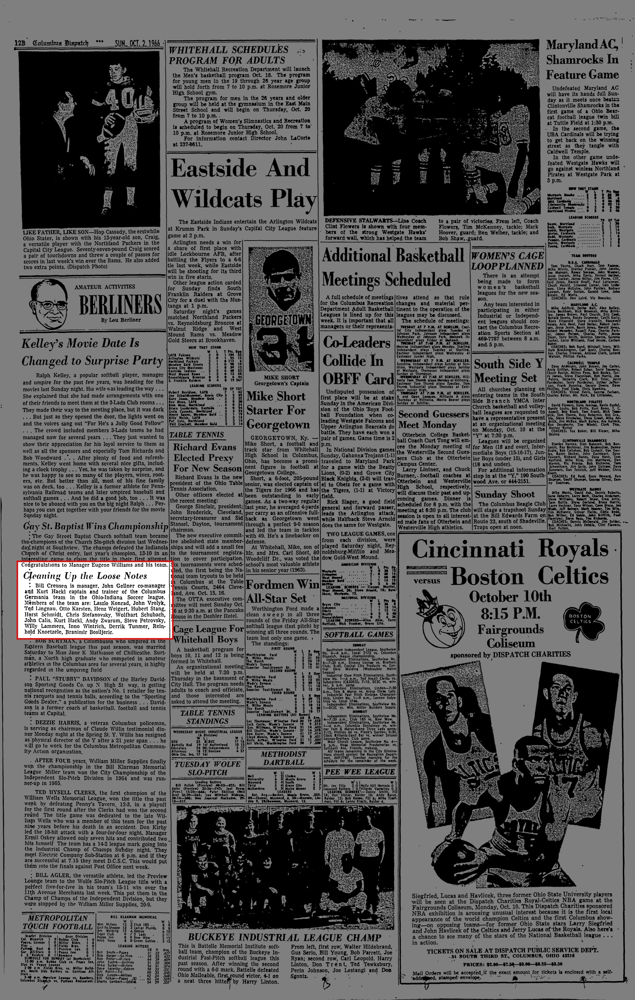
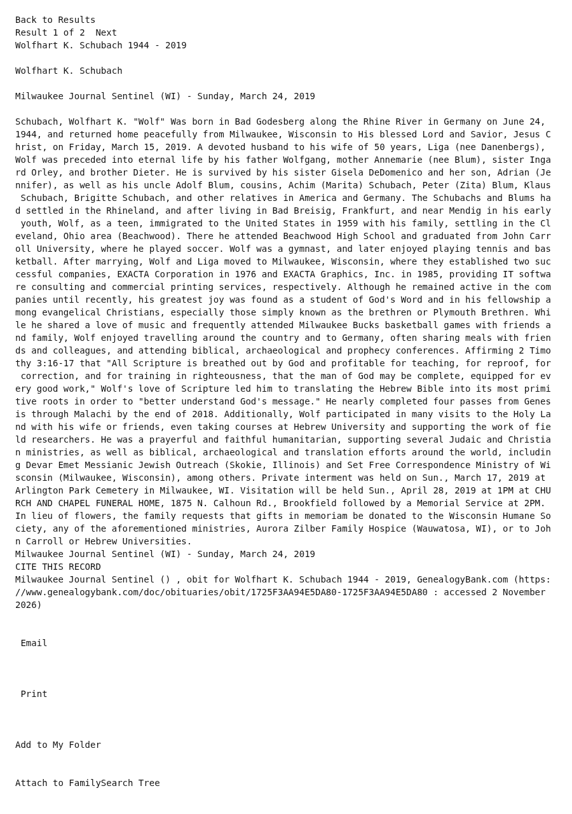

Wolf Schubach 1944–2019
Husband of Peter's aunt Liga Danenberg.
Also recorded as Wolfhart Schubach.
Wolf Schubach was born on 24 Jun 1944 in Bad Godesberg, Germany2. He married Liga Danenberg between 1968 and 1969 in United States21. He arrived at Beachwood, Ohio, United States in 195912. He died on 15 Mar 2019 in Milwaukee, Milwaukee County, Wisconsin, United States14,15 and was buried at Arlington Park Cemetery, Greenfield, Greenfield (Arlington Park Cemetery), Milwaukee County, Wisconsin, United States16.
Family
- Wife
- Liga Danenberg b. 1946 · married between 1968 and 1969 in United States21
Life events
| Event | Date | Place and details |
|---|---|---|
| Lived | bet 1944 and 1959 | Bad Breisig, Germany3 |
| Born | 24 Jun 1944 | Bad Godesberg, Germany2 |
| Education | bet 1959 and 1966 | Beachwood, Ohio, United States Beachwood High School, Beachwood, Ohio; then John Carroll University (University Heights, a Cleveland suburb), where he played soccer and from which he graduated. Legacy's structured "About" field for the obituary is simply "John Carroll University". He was also a gymnast, and later played tennis…6 |
| Arrived | 1959 | Beachwood, Ohio, United States12 |
| Education | bet 1960 and 1961 | Cleveland, Ohio, United States Enrolled in Grade 11A (Class of June 1962, Homeroom 127, Mr. Gerald D. Birnbaum) at Cleveland Heights High School, Cleveland Heights, Ohio, during the 1960–1961 school year (pictured standing seventh from left / far right in the Third Row in suit and tie on printed page 149 of the 1961 Cleveland…7 |
| Education | bet 1964 and 1965 | University Heights, Ohio, United States Attended John Carroll University in University Heights, Ohio, where during the 1964–1965 academic year he was: (1) A member of the Ohio Theta Chapter of Alpha Epsilon Delta, the international pre-medical honor fraternity ('Membership in Alpha Epsilon Delta is a recognition of superior scholastic…8 |
| Arrived | 17 Dec 1965 | Cleveland, Ohio, United States13 |
| Lived | 2 Oct 1966 | Columbus, Ohio, United States4 |
| Married | bet 1968 and 1969 | with Liga Danenberg United States21 |
| Note | 16 Sep 1975 | Milwaukee, Milwaukee County, Wisconsin, United States Runner-up in the Four-Rated Men's Singles Final at the SI System Tennis Tournament at Milwaukee Indoor, where Bill Czaikowski defeated Wolf Schubach, 6-7, 6-2, 6-1.17 |
| Work | bet 1976 and 2019 | Brookfield, Wisconsin, United States Computer programmer, then founder with Liga of EXACTA Corporation (1976, IT software consulting, Brookfield, Wisconsin, with a Madison branch) and Exacta Graphics, Inc. (1985, commercial printing, 13050 W Custer Ave, Butler, Wisconsin). He remained active in both companies until shortly before his…9 |
| Note | 11 Aug 1984 | Beachwood, Ohio, United States Death of his father, Dr. Wolfgang W. Schubach, M.D., age 64, internist (office at 29001 Cedar Rd., Beachwood; residence at 27500 Cedar Rd., Beachwood, Ohio), who died Saturday, 11 August 1984 of cancer; born in Wiesbaden, Germany, graduated from medical school in Bonn, immigrated to the US in…18 |
| Work | 20 Jan 1991 | Brookfield, Wisconsin, United States Co-founder and executive of EXACTA Print Inc. / EXACTA Graphics, Inc. and EXACTA Corporation at 16595 W. Blue Mound Rd., Brookfield, Wisconsin 53005 (phone 414-784-7212); also took out a $58,000 commercial heating and air-conditioning permit at 16595 W. Blue Mound Rd. in February 1996.10 |
| Work | 8 Feb 1996 | Brookfield, Wisconsin, United States Issued a $58,000 commercial building permit by the City of Brookfield for heating and air-conditioning improvements at 16595 W. Blue Mound Road, Brookfield, Wisconsin (headquarters of EXACTA Corporation).11 |
| Lived | bet Jul 2003 and 2015 | Milwaukee, Milwaukee County, Wisconsin, United States5 |
| Note | bet 2008 and 2017 | Milwaukee, Milwaukee County, Wisconsin, United States Recorded as a financial donor to Holocaust remembrance and biblical archaeology institutions: (1) Listed in the $1,000–$4,999 donor tier in the United States Holocaust Memorial Museum 2008–2009 Annual Report (p. 19 / PDF p. 22: 'Wolfhart K. Schubach'); (2) Listed in the 2013 Donor Honor Roll…19 |
| Note | 2018 | Milwaukee, Milwaukee County, Wisconsin, United States His life's second work: a hyper-literal translation of the Hebrew Bible. "Wolf's love of Scripture led him to translating the Hebrew Bible into its most primitive roots in order to 'better understand God's message.' He nearly completed four passes from Genesis through Malachi by the end of 2018."…20 |
| Died | 15 Mar 2019 | Milwaukee, Milwaukee County, Wisconsin, United States14,15 |
| Buried | 17 Mar 2019 | Arlington Park Cemetery, Greenfield, Greenfield (Arlington Park Cemetery), Milwaukee County, Wisconsin, United States16 |
Possible records (not confirmed)
Records that may concern him, but don't settle it: an initial and a surname only, a family recollection, or a reading that needs a second look. Each links to the record.
- Occupation 2012 Brookfield & Madison, Wisconsin, USA: Listed as 'Owner/CEO: Wolfhart Schubach' of EXACTA Corporation (Parent Location: Brookfield, WI; Branch Location: Madison, WI; Year Established: 1976; Contact: Steve McQuin, Vice President – Business Development, 608-243-3603) in § 9.58 of the Greater Madison, Wisconsin Area 2012 High-Tech Directory.22 Published 2012 Greater Madison High-Tech Directory listing for EXACTA Corporation, naming Owner/CEO Wolfhart Schubach and documenting the company's Madison branch office in addition to its Brookfield headquarters. | 2026-11-16: the checker failed this (the saved file is only a Google search snippet that does not show the 'Owner/CEO' line) and the fixer dropped it; restored by the family session as low-confidence, since a finding is never deleted. Needs the directory page itself.
Photographs


Records




Sources
- MyHeritage family tree 'Dzimta' of Peter's third cousin (his family site), member GEDCOM export of 26 Oct 2026, I500163 (person-6500163), GEDCOM lines 10173–10180.
NAME Wolfhart /Schubach/
- Wolfhart K. "Wolf" Schubach obituary (1944–2019).
Schubach, Wolfhart K. "Wolf" Was born in Bad Godesberg along the Rhine River in Germany on June 24, 1944 … preceded into eternal life by his father Wolfgang, mother Annemarie (nee Blum), sister Ingard Orley, and brother Dieter.
Born 24 June 1944 at Bad Godesberg on the Rhine (now a district of Bonn). Parents: Wolfgang Schubach and Annemarie née Blum, both predeceasing him. Siblings: Ingard Orley and Dieter (both predeceasing him) and Gisela DeDomenico, who survived him with her son Adrian (Jennifer). Uncle: Adolf Blum. Cousins: Achim (Marita) Schubach, Peter (Zita) Blum, Klaus Schubach, Brigitte Schubach.
- Wolfhart K. "Wolf" Schubach obituary (1944–2019).
The Schubachs and Blums had settled in the Rhineland, and after living in Bad Breisig, Frankfurt, and near Mendig in his early youth
"The Schubachs and Blums had settled in the Rhineland, and after living in Bad Breisig, Frankfurt, and near Mendig in his early youth…" — three dated-enough German places for the map, all between his birth in 1944 and emigration in 1959.
- Cleaning Up the Loose Notes (Columbus Germania Soccer Team), The Columbus Dispatch (Columbus, Ohio), 2 October 1966, p. 76.
Bill Creusen is manager, John Gellner co-manager aitd Kurt Hackl captain and trainer of the Columbus Germania team in the Ohio-Indiana Soccer league. Members of the team are: Laszlo Konrad, John Vrolyk, Tgd Lingnau. Otto Karsten, Henz Weigert, Hubert Stang, Horst Schmidt, Chris Stefanovsky, Wolfhart Schubach, John Calis, Kurt Hackl, Andy Zwarum, Steve Petrovsky, Willy Lammers, Inno Wintrich, Derrik Tunmcr, Reinhold Knoetzele, Branimir Bosiljeric.
Member of the Columbus Germania soccer team in the Ohio-Indiana Soccer League in Columbus, Ohio (providing direct contemporary evidence of his presence in Columbus while Liga Danenberg was a student at Ohio State University).
- Milwaukee Business Journal, 'Marketing buzz' (21 July 2003) & U.S. Index to Public Records (2003–2015).
[doc 1:] Wolfhart Schubach, a principal and chief executive officer of Exacta Corp., Brookfield, is the new owner of Big Dog's house at [address omitted]. [doc 2:] Robinson, was the Milwaukee Bucks' first pick in the 1994 NBA draft and played here for eight years [doc 3:] Third Residence Date: 2003-2015 | Third Address: [address omitted], Milwaukee, Wisconsin, USA 53217
Purchased the Bayside / Milwaukee residence at [address omitted], Milwaukee, WI 53217 in July 2003 from former Milwaukee Bucks NBA player 'Big Dog' Robinson (the Milwaukee Bucks' first pick in the 1994 NBA draft, who played in Milwaukee for eight years); U.S. Index to Public Records (1994–2019) records both Liga D. Schubach and Wolfhart K. Schubach at [address omitted], Milwaukee, WI 53217 from 2003 to 2015.
- Wolfhart K. "Wolf" Schubach obituary (1944–2019).
There he attended Beachwood High School and graduated from John Carroll University, where he played soccer. Wolf was a gymnast, and later enjoyed playing tennis and basketball.
Beachwood High School, Beachwood, Ohio; then John Carroll University (University Heights, a Cleveland suburb), where he played soccer and from which he graduated. Legacy's structured "About" field for the obituary is simply "John Carroll University". He was also a gymnast, and later played tennis and basketball.
- 1961 Cleveland Heights High School Yearbook, Cleveland Heights, Ohio, p. 149 — June 1962, 11A Homeroom 127.
JUNE 1962 | 11A HOMEROOM 127 MR. GERALD D. BIRNBAUM | First: P. Neuman, J. Stuart, B. Levine, B. West, C. Weiss, N. Chapman, B. Roth. Second: Mr. Birnbaum, R. Means, L. Kooker, S. Kaufman, M. Brokvist, S. Greif, L. Spector. Third: R. Swenson, A. Weintraub, D. Gershowitz, G. Roberts, A. Lowy, J. Perna, W. Schubach. Fourth: E. Wasserman, B. Fello, B. Pearse, B. Kliever, P. Katz, J. Darke. | 149
Enrolled in Grade 11A (Class of June 1962, Homeroom 127, Mr. Gerald D. Birnbaum) at Cleveland Heights High School, Cleveland Heights, Ohio, during the 1960–1961 school year (pictured standing seventh from left / far right in the Third Row in suit and tie on printed page 149 of the 1961 Cleveland Heights High School yearbook as 'W. Schubach').
- 1965 John Carroll University Yearbook (The Carillon), University Heights, Ohio, pp. 80 (Alpha Epsilon Delta) & 86–87 (Soccer).
[doc 1:] ALPHA EPSILON DELTA | The Ohio Theta Chapter of Alpha Epsilon Delta, the international pre-medical honor fraternity, was activated at John Carroll in May of 1963. ... Row 2: G. Santangelo, W. Schubach, V. Basile, R. Prudence, J. Fox, J. Brunge, J. Reineck, R. Driscoll. [doc 2:] SOCCER | Soccer made its debut as a varsity sport at John Carroll this past fall, and quite a debut it was. Under coach Ralph Pica, this first year team turned in the quite impressive record of 6-1-1. Led by captain Pete Kassay-Farkas and high scoring Bart Schuback, (the number two scorer in Ohio soccer), the Blue Streaks soundly trounced Western Reserve and Case Tech twice, Mount Union and Fenn. ... All PAC Bart Schuback [doc 3:] Members of the All-PAC Team 1964: Steve Jalics, Peter Kassay-Farkas, Bart Schubach, Geza Terzhalmy ... Row 2: B. Schubach, B. Searson, M. Necas, G. Terzhalmy, J. Minaudo, F. Palvolgyi, D. Griffin, J. Fellner, S. Jalics, P. Migielicz.
Attended John Carroll University in University Heights, Ohio, where during the 1964–1965 academic year he was: (1) A member of the Ohio Theta Chapter of Alpha Epsilon Delta, the international pre-medical honor fraternity ('Membership in Alpha Epsilon Delta is a recognition of superior scholastic achievement', pictured second from left in Row 2 on printed p. 80 of the 1965 Carillon yearbook as 'W. Schubach'); and (2) A star player (#6) on John Carroll University's inaugural Varsity Soccer Team in Fall 1964 under coach Ralph Pica (which finished 6–1–1 and second place in the Presidents' Athletic Conference), named to the 1964 All-PAC Team and ranking as the #2 scorer in all of Ohio collegiate soccer (featured in a half-page action photograph on printed p. 86 captioned 'All PAC Bart Schuback' and in the team photograph on printed p. 87, Row 2, 1st from left, where the yearbook typesetter rendered 'Wolfhart Schubach' as 'Bart Schuback' / 'Bart Schubach' / 'B. Schubach').
- Wolfhart K. "Wolf" Schubach obituary (1944–2019).
they established two successful companies, EXACTA Corporation in 1976 and EXACTA Graphics, Inc. in 1985, providing IT software consulting and commercial printing services, respectively. Although he remained active in the companies until recently…
Computer programmer, then founder with Liga of EXACTA Corporation (1976, IT software consulting, Brookfield, Wisconsin, with a Madison branch) and Exacta Graphics, Inc. (1985, commercial printing, 13050 W Custer Ave, Butler, Wisconsin). He remained active in both companies until shortly before his death.
- Classified Advertisement (EXACTA Print Inc.), The Milwaukee Journal (Milwaukee, Wisconsin), 20 January 1991, p. 162; and Building Permits, Milwaukee Journal Sentinel, 8 February 1996, p. 193.
PRINTING SALES Commercial shop with late- model multicolor Heidelbergs has immediate opening for experienced printing salesman Please submit your resume in complete confidence to or call Wolf Schubach EXACTA PRINT INC 16595 W Bluemound Rd. Brookfield. Wt 53005 784-7212
Translation: PRINTING SALES: Commercial shop with late-model multicolor Heidelbergs has immediate opening for experienced printing salesman. Please submit your resume in complete confidence to or call Wolf Schubach, EXACTA PRINT INC, 16595 W. Bluemound Rd., Brookfield, WI 53005, 784-7212.
Co-founder and executive of EXACTA Print Inc. / EXACTA Graphics, Inc. and EXACTA Corporation at 16595 W. Blue Mound Rd., Brookfield, Wisconsin 53005 (phone 414-784-7212); also took out a $58,000 commercial heating and air-conditioning permit at 16595 W. Blue Mound Rd. in February 1996.
- Milwaukee Journal Sentinel, 8 February 1996, Neighbors — West Suburban, p. 20 (GenealogyBank p. 193, image index 192) — Brookfield Building Permits.
The following building permits were issued recently by the City of Brookfield: ... 16595 W. Blue Mound Road: Wolfhart K. Schubach, heating and air-conditioning, $58,000.
Issued a $58,000 commercial building permit by the City of Brookfield for heating and air-conditioning improvements at 16595 W. Blue Mound Road, Brookfield, Wisconsin (headquarters of EXACTA Corporation).
- Wolfhart K. "Wolf" Schubach obituary (1944–2019).
Wolf, as a teen, immigrated to the United States in 1959 with his family, settling in the Cleveland, Ohio area (Beachwood).
Emigrated to the United States with his family in 1959, as a teenager, and settled in the Cleveland area, at Beachwood, Ohio. A near-parallel to the Danenbergs, who came as Latvian displaced persons ten years earlier and also settled in Ohio.
- U.S. District Court, Cleveland, Ohio — Naturalization Index Card for Wolfhart Klaus Schubach (17 Dec 1965).
No. 8685464 | Name SCHUBACH, Wolfhart Klaus residing at 2181 Richmond Road, Cleveland, Ohio | Date of birth 6/24/1944 | Date of order of admission 12/17/65 | Date certificate issued Dec. 17, 1965 by the U. S. District Court at Cleveland, Ohio | Petition No. 147143 | Alien Registration No. 11 237 083 | Germany | Wolfhart Klaus Schubach (COMPLETE AND TRUE SIGNATURE OF HOLDER)
Naturalized as a United States citizen on 17 December 1965 in the U.S. District Court for the Northern District of Ohio, Eastern Division, at Cleveland, Ohio, at age 21, under full legal name 'SCHUBACH, Wolfhart Klaus' (Date of birth: 6/24/1944; Date of order of admission: 12/17/65; Date certificate issued: Dec. 17, 1965; Petition No. 147143; Certificate No. 8685464; Alien Registration No. 11 237 083; Country of former nationality: Germany; signed 'Wolfhart Klaus Schubach'), while residing at 2181 Richmond Road, Cleveland, Ohio.
- Obituary: Wolfhart K. Schubach 1944 - 2019, Milwaukee Journal Sentinel (Milwaukee, Wisconsin), 24 March 2019.
Schubach, Wolfhart K. "Wolf" Was born in Bad Godesberg along the Rhine River in Germany on June 24, 1944, and returned home peacefully from Milwaukee, Wisconsin to His blessed Lord and Savior, Jesus Christ, on Friday, March 15, 2019. A devoted husband to his wife of 50 years, Liga (nee Danenbergs), Wolf was preceded into eternal life by his father Wolfgang, mother Annemarie (nee Blum), sister Ingard Orley, and brother Dieter. He is survived by his sister Gisela DeDomenico and her son, Adrian (Jennifer), as well as his uncle Adolf Blum, cousins, Achim (Marita) Schubach, Peter (Zita) Blum, Klaus Schubach, Brigitte Schubach, and other relatives in America and Germany.
Born 24 June 1944 in Bad Godesberg, Germany; died Friday, 15 March 2019 in Milwaukee, Wisconsin; husband of 50 years to Liga (nee Danenbergs); preceded in death by father Wolfgang, mother Annemarie (nee Blum), sister Ingard Orley, and brother Dieter; survived by sister Gisela DeDomenico and her son Adrian (Jennifer), uncle Adolf Blum, and cousins Achim (Marita) Schubach, Peter (Zita) Blum, Klaus Schubach, and Brigitte Schubach; immigrated to Beachwood, Ohio in 1959, graduated from Beachwood High School and John Carroll University; co-founded EXACTA Corporation (1976) and EXACTA Graphics, Inc. (1985); private interment Sunday, 17 March 2019 at Arlington Park Cemetery, Milwaukee; memorial service Sunday, 28 April 2019 at Church and Chapel Funeral Home, 1875 N. Calhoun Rd., Brookfield.
- Wolfhart K. "Wolf" Schubach obituary (1944–2019).
returned home peacefully from Milwaukee, Wisconsin to His blessed Lord and Savior, Jesus Christ, on Friday, March 15, 2019 … Private interment was held on Sun., March 17, 2019 at Arlington Park Cemetery in Milwaukee, WI.
Died Friday 15 March 2019 at Milwaukee, Wisconsin, aged 74. Private interment Sunday 17 March 2019 at Arlington Park Cemetery, Milwaukee. Visitation and memorial service Sunday 28 April 2019, 1 p.m. and 2 p.m., at Church & Chapel Funeral Home, 1875 N. Calhoun Rd, Brookfield, WI 53005. Obituary published in the Milwaukee Journal Sentinel, 24 March 2019, with a photograph (cache.legacy.net/legacy/images/cobrands/jsonline/photos/0004827130-01-1_20190324.jpgx). There is no Find a Grave memorial for him: a Find a Grave search for the surname Schubach, died 2019, Wisconsin returns "No matches found".
- Milwaukee Journal Sentinel Obituary (24 Mar 2019) & Find a Grave Memorials 197770411 and 142767057.
Private interment was held on Sun., March 17, 2019 at Arlington Park Cemetery in Milwaukee, WI. Visitation will be held Sun., April 28, 2019 at 1PM at CHURCH AND CHAPEL FUNERAL HOME, 1875 N. Calhoun Rd., Brookfield followed by a Memorial Service at 2PM. In lieu of flowers, the family requests that gifts in memoriam be donated to the Wisconsin Humane Society, any of the aforementioned ministries, Aurora Zilber Family Hospice (Wauwatosa, WI), or to John Carroll or Hebrew Universities. Published by Milwaukee Journal Sentinel on Mar. 24, 2019.
Buried in a private interment on Sunday, 17 March 2019 at Arlington Park Cemetery, Greenfield (Milwaukee), Milwaukee County, Wisconsin, where his mother Annamaria Blum Schubach (born 4 July 1923, died 10 February 2013) is also buried, in Block 37-A, Lot 210, Space 5-a. Visitation was held Sunday, 28 April 2019 at 1:00 p.m. at Church and Chapel Funeral Home, 1875 N. Calhoun Rd., Brookfield, Wisconsin, followed by a memorial service at 2:00 p.m., with memorial gifts requested for the Wisconsin Humane Society, Devar Emet Messianic Jewish Outreach (Skokie, IL), Set Free Correspondence Ministry of Wisconsin (Milwaukee, WI), Aurora Zilber Family Hospice (Wauwatosa, WI), John Carroll University, or Hebrew University.
- The Milwaukee Journal, 16 September 1975, Part 2, p. 10 (GenealogyBank p. 24, image index 23) — SI System Tennis Tournament Results.
SI SYSTEM TOURNAMENT At Milwaukee Indoor ... Four Rated Men's Singles Final — Bill Czaikowski beat Wolf Schubach, 6-7, 6-2, 6-1.
Runner-up in the Four-Rated Men's Singles Final at the SI System Tennis Tournament at Milwaukee Indoor, where Bill Czaikowski defeated Wolf Schubach, 6-7, 6-2, 6-1.
- Dr. Wolfgang Schubach, internist / Death Notice: Wolfgang W. Schubach, M.D., The Plain Dealer (Cleveland, Ohio), 14 August 1984, p. 25.
Dr. Wolfgang Schubach, internist Dr. Wolfgang Schubach practiced internal medicine. His office was at 29001 Cedar Rd., Beachwood.; Cancer was diagnosed two months ago and Dr. Schubach died Saturday at his home in Beachwood. He was 64. Dr. Schubach was bom in Wiesbaden, Germany, and came to the United States in 1957. He had been graduated from medical school in Bonn. He worked two years at Suburban Community Hospital and then took his internship and residency at Huron Road Hospital where he was named to the medical staff. Dr. Schubach’s hobby was photography and he had taken several prizes in shows at the Jewish Community Center. He is survived by his wife, Dr. Margaret Schubach; sons Wolfhart and Dieter; daughter Gisella DeDomenico; stepsons Dr. Robert Cendo and Richard W. Cendo; a great-granddaughter and a brother. Memorial services will be at 7:30 p.m. tomorrow at his home, 27500 Cedar Rd.
Death of his father, Dr. Wolfgang W. Schubach, M.D., age 64, internist (office at 29001 Cedar Rd., Beachwood; residence at 27500 Cedar Rd., Beachwood, Ohio), who died Saturday, 11 August 1984 of cancer; born in Wiesbaden, Germany, graduated from medical school in Bonn, immigrated to the US in 1957, practiced at Suburban Community Hospital and Huron Road Hospital; survived by second wife Dr. Margaret B. Schubach, M.D., sons Wolfhart and Dieter, daughter Gisella DeDomenico, grandson Adrian DeDomenico, stepsons Dr. Robert Cendo and Richard W. Cendo, and brother Klaus Schubach (preceded in death by daughter Ingard Orley and sister Margaret).
- Donor Honor Rolls: USHMM (2008–09), Andrews University Focus (Fall 2013), and ASOR Program Guide (2017).
[doc 1:] $1,000–$4,999 ... Wolfhart K. Schubach [doc 2:] 2013 DONOR HONOR ROLL | BLUE & GOLD CLUB $500–$999 ... Wolfhart K Schubach [doc 3:] Contributor ($100–$249) ... Wolfhart K. Schubach
Recorded as a financial donor to Holocaust remembrance and biblical archaeology institutions: (1) Listed in the $1,000–$4,999 donor tier in the United States Holocaust Memorial Museum 2008–2009 Annual Report (p. 19 / PDF p. 22: 'Wolfhart K. Schubach'); (2) Listed in the 2013 Donor Honor Roll ('Blue & Gold Club, $500–$999') in Focus: The Andrews University Magazine (Fall 2013, Vol. 49, No. 4, pp. 62, 65: 'Wolfhart K Schubach'); and (3) Listed as a Contributor ($100–$249) in the American Schools of Oriental Research (ASOR) 2017 Annual Meeting Program Guide (Boston, Massachusetts, 15–18 November 2017, p. 69: 'Wolfhart K. Schubach').
- About the Schubachs.
Over more than a decade, he translated every Hebrew and Aramaic verse of the Tanakh (Old Testament) three times, typically analyzing 22 verses a day. In this way, Wolf developed his own hyper-literal translation…
His life's second work: a hyper-literal translation of the Hebrew Bible. "Wolf's love of Scripture led him to translating the Hebrew Bible into its most primitive roots in order to 'better understand God's message.' He nearly completed four passes from Genesis through Malachi by the end of 2018." Devar Emet, which holds his library, describes the method: "Over more than a decade, he translated every Hebrew and Aramaic verse of the Tanakh (Old Testament) three times, typically analyzing 22 verses a day… through the painstaking identification and expression of the unique meaning of each Hebrew word from its tripartite roots." He took courses at the Hebrew University in Jerusalem, supported field archaeologists, and attended biblical, archaeological and prophecy conferences.
- Wolfhart K. "Wolf" Schubach obituary (1944–2019).
A devoted husband to his wife of 50 years, Liga (nee Danenbergs) … After marrying, Wolf and Liga moved to Milwaukee, Wisconsin
Married Wolfhart K. "Wolf" Schubach. His obituary of March 2019 calls him "A devoted husband to his wife of 50 years, Liga (nee Danenbergs)", which puts the wedding in 1968 or 1969; the Messianic ministry they supported says the same ("Wolf and Liga Schubach shared 50 years of life together"). The place is not stated. Both were then in north-east Ohio — he in Beachwood, near Cleveland, having graduated from John Carroll University; her family had come to Ohio in 1949 and her brother took his B.S. at Case in Cleveland in 1964 — so an Ohio wedding is the likely guess but is NOT established. The couple moved to Milwaukee after marrying.
- SILO Research Documents / Greater Madison Chamber of Commerce.